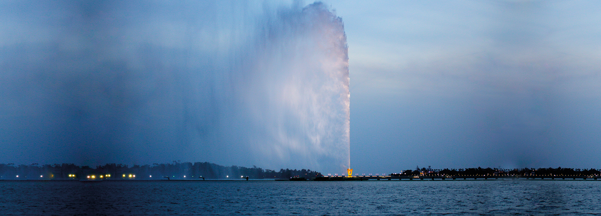

For more info you can visit Jeddah wiki page!
Jeddah City: Jeddah is a saudi city located in the middle of the eastern coast of the red sea known as the Bride of the Red Sea and is considered the economic and tourism capital of the country. Its population is estimated around 3.4 million and it is the second largest city after Riyadh.
For more info you can visit Jeddah wiki page!